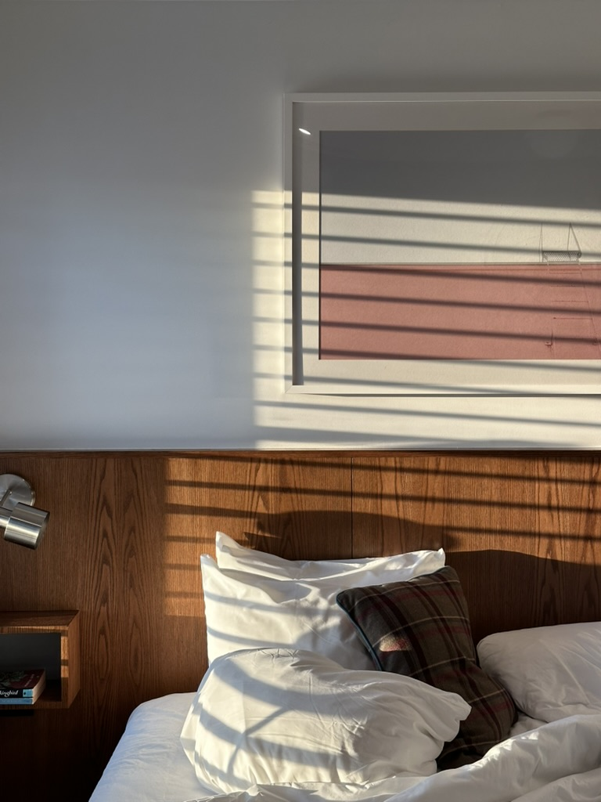
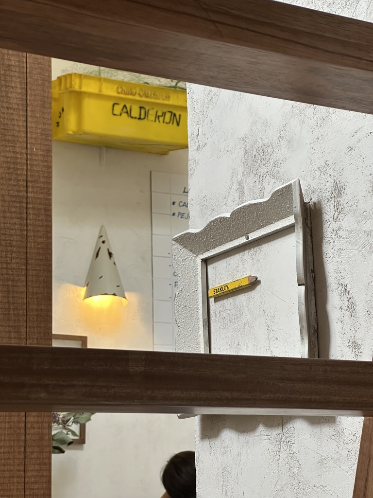

What makes a good place to stay at?
A good stay is made up for four different factors:
i) comfort ii) aesthetics iii) service iv) coexistence
with it's surroundings. Let's start with the first one:
comfort. What creates comfort: a place that feels warm,
no noise, good beds, darkness, good temperature.


A good stay is made up for four different factors: i) comfort ii) aesthetics iii)
service iv) coexistence with it's surroundings. Let's start with the first one: comfort.
What creates comfort: a place that feels warm, no noise, good beds, darkness,
good temperature.
Creating an atmosphere that connects with its surroundings
What makes a good place to stay at?
A good stay is made up for four different factors: i) comfort ii) aesthetics iii)
service iv) coexistence with it's surroundings. Let's start with the first one:
comfort. What creates comfort: a place that feels warm, no noise, good beds, darkness,
good temperature.